Atelier Sablon · Dieulefit, Drôme
Vos assiettes, tournées à Dieulefit. Les mêmes dans cinq ans.
Je tourne en grès la vaisselle des restaurants, dans un émail à votre nom. Sa recette reste en fiche : un réassort arrive sous trois semaines.
- Dès 40 pièces
- 10 à 14 semaines
- Lave-vaisselle pro
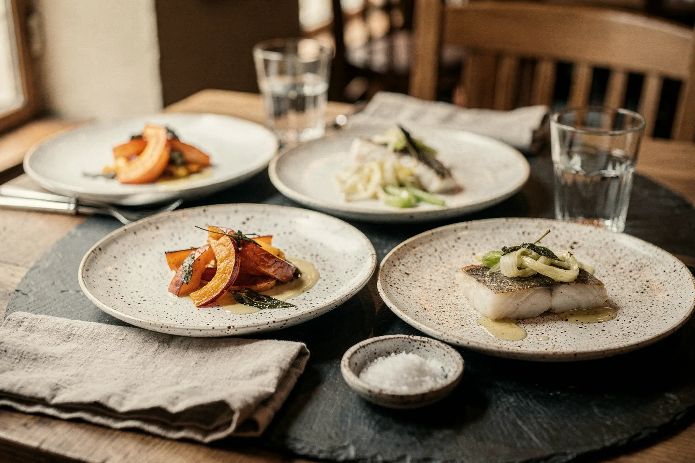
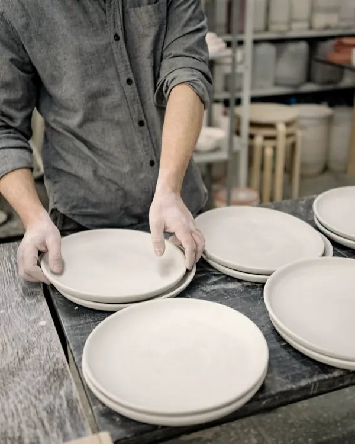
Ils servent dans mon grès
- Maison Ardoise Lyon
- Café Remous Valence
- Les Thermes Vals-les-Bains
- Hôtel des Tanneurs Grignan
- Bistrot du Lavoir Nyons
- pièces livrées depuis 2023
- 604
- semaines pour un réassort
- 3
- émaux gardés en fiche
- 5
Chaque maison a son émail. Je le garde en fiche.
Cinq recettes, refaites à la pièce.
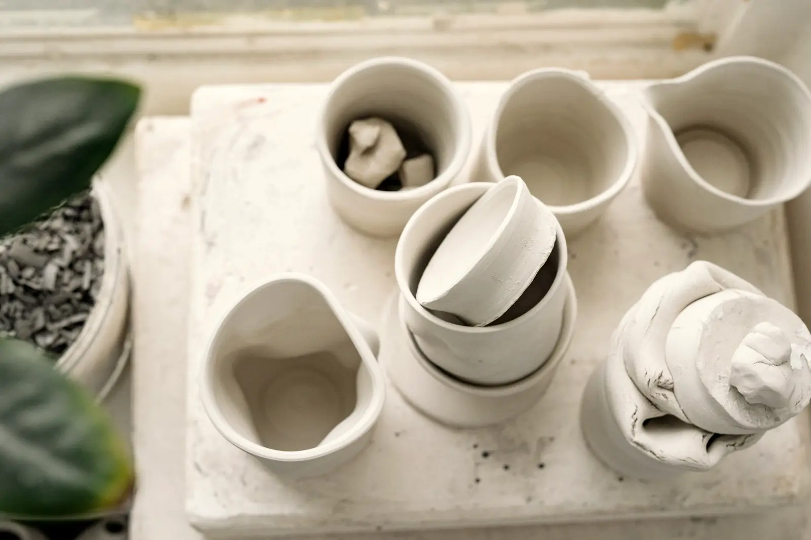
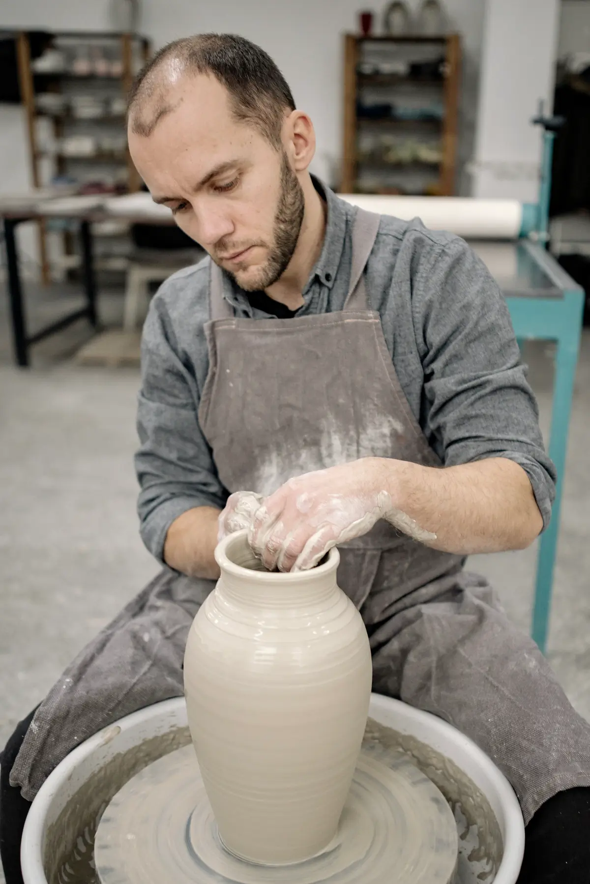
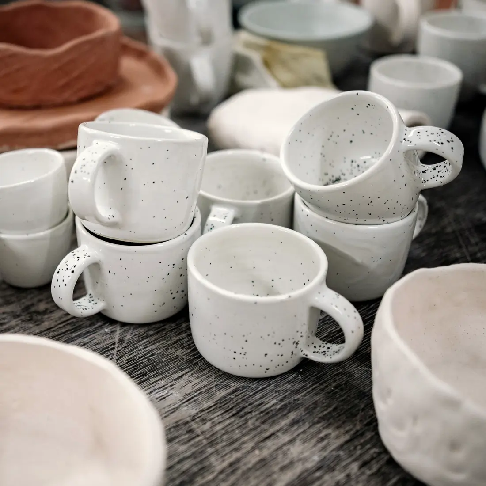
Six pièces de base, dans l'émail de votre maison
Prix hors taxes. Choisissez-en quatre pour l'essai.
· en série
Projet ouvert · 2025
Craie : 320 assiettes pour la Maison Ardoise
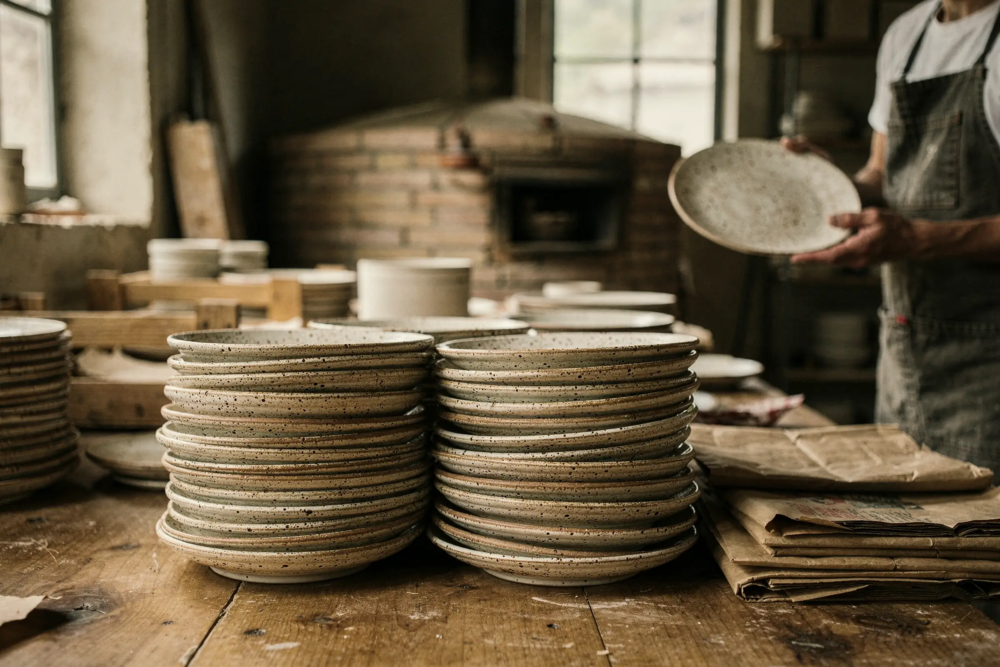
Deux réassorts en 2026, sans écart de teinte.
- Pièces
- 240 plates, 80 creuses
- Délai
- 12 semaines
- Réassort
- Sous 3 semaines
Cinq services, tournés depuis 2023
2025CraieMaison Ardoise, Lyon320 pièces
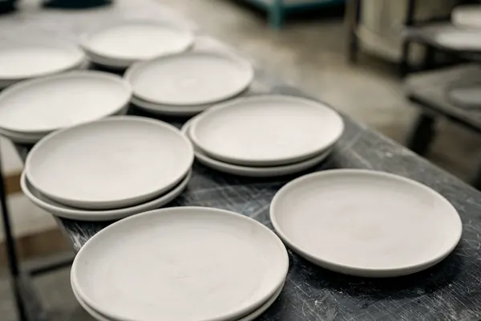
Émail mat, lave-vaisselle professionnel.
2025GaletCafé Remous, Valence120 tasses
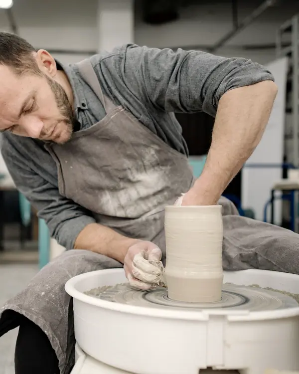
Anse taillée pour le pouce.
2024SourceLes Thermes, Vals-les-Bains90 bols
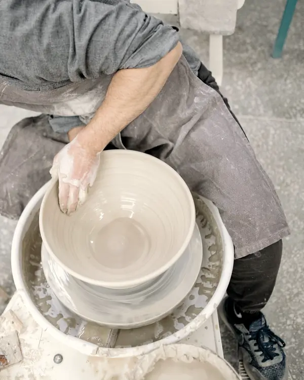
Empilables par six.
2024SiloHôtel des Tanneurs, Grignan14 vases
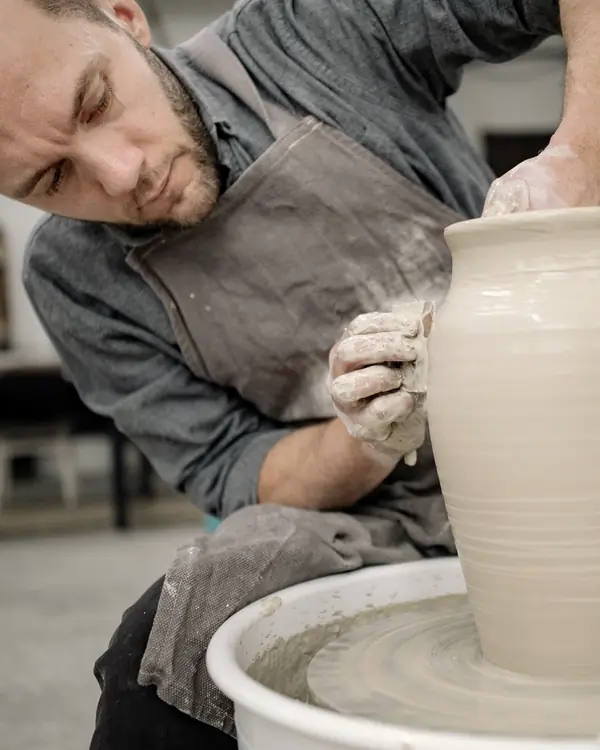
Une pièce par chambre.
2023LavoirBistrot du Lavoir, Nyons60 plats
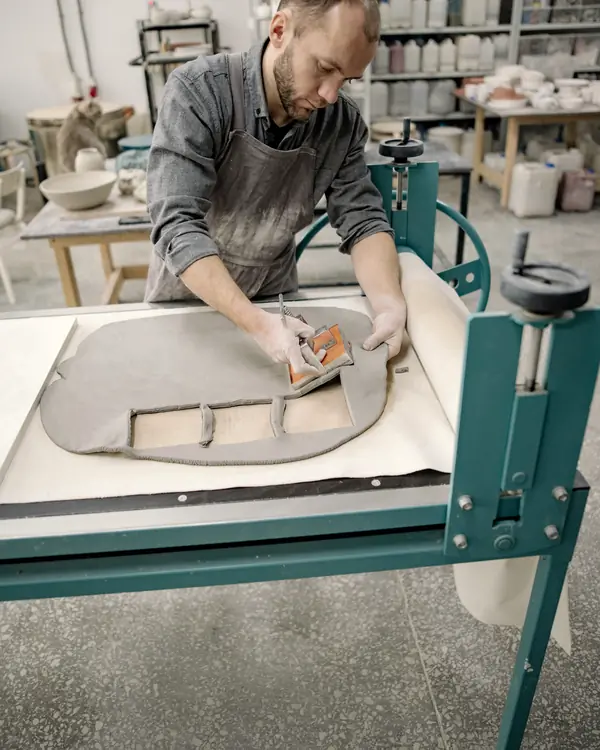
Découpés dans la plaque.
Quatorze semaines, de l'essai au service complet
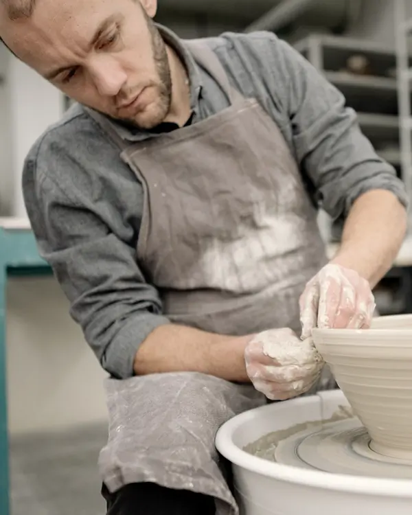
01 · semaines 1 à 3Série d'essai Quatre pièces dans un de mes cinq émaux, chez vous sous huit jours. 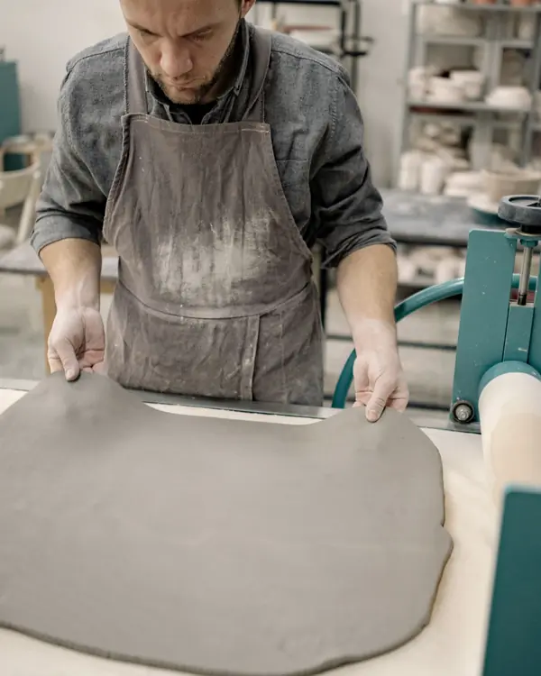
02 · semaine 4Commande Acompte de 30 %, fiche d'émail à votre nom. 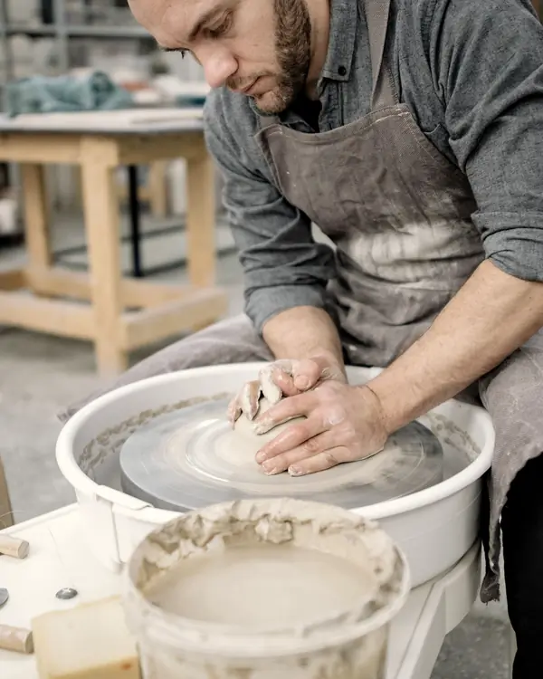
03 · semaines 5 à 10Tournage Centrer, monter, tournasser. 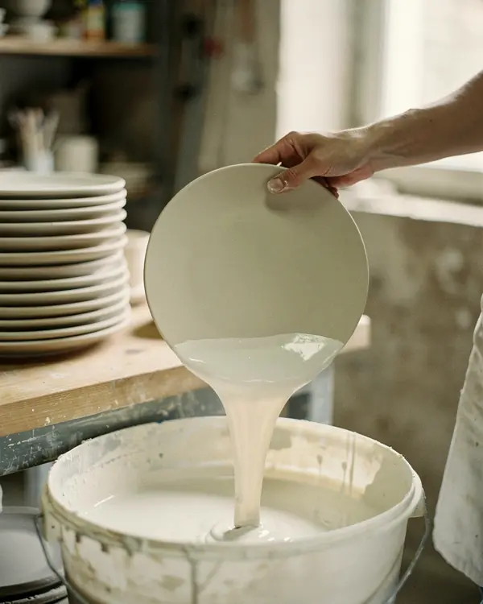
04 · semaines 10 à 13Émail et cuissons Deux cuissons, la seconde à 1 280 °C. 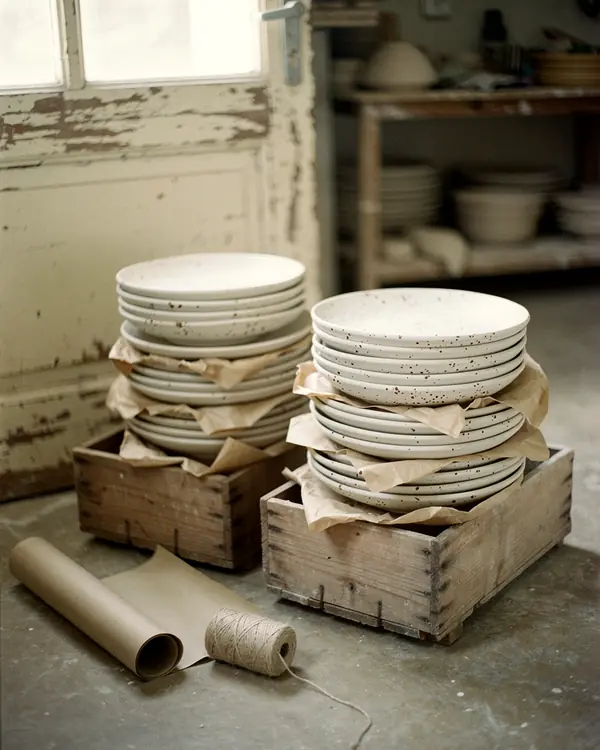
05 · semaine 14Livraison Par vingt, en caisses, dans toute la France.
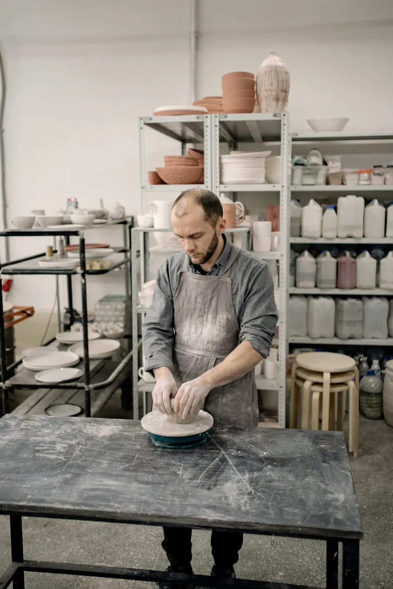
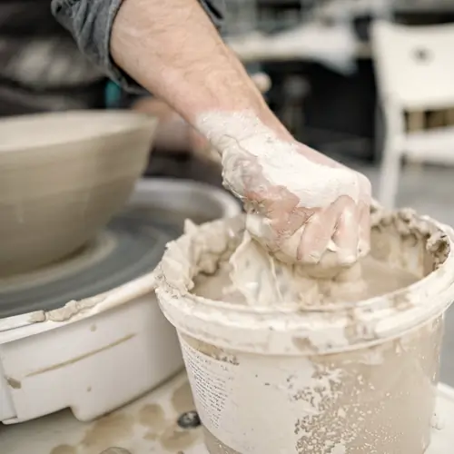
Un tour, un four, une seule paire de mains
Je tourne seul à Dieulefit depuis 2014.
Vous parlez à celui qui tourne vos assiettes, jusqu'au réassort.
L'atelier se visite sur rendez-vous, le jeudi.
- Depuis
- 2014
- Seconde cuisson
- 1 280 °C
- Village potier
- Dieulefit
Trois chefs, deux ans de service
-
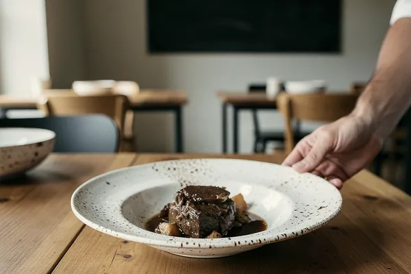
« J'en ai cassé vingt en un an. Les nouvelles sont arrivées en trois semaines, identiques. »
Inès Vallat · Maison Ardoise
-
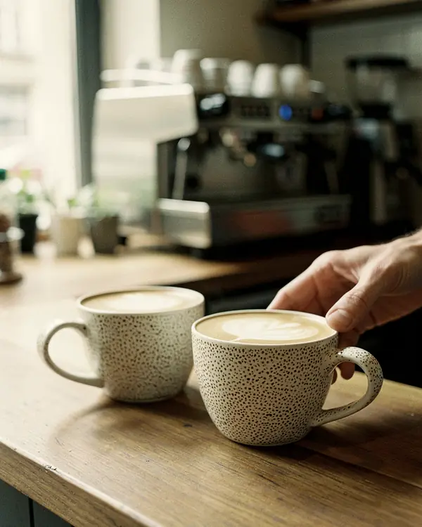
« Les tasses passent au lave-vaisselle quatre fois par jour. Pas un éclat sur l'anse. »
Hugo Ferrand · Café Remous
-

« Deux semaines de service dans l'essai ont réglé la question du poids en main. »
Sophie Arnaud · Bistrot du Lavoir
Cet automne à l'atelier
Ce que les chefs demandent d'abord
Ça passe au lave-vaisselle professionnel ?
Oui. Chaque émail passe 500 cycles à 85 °C, et les bords sont épaissis pour l'empilage.
Si j'en casse dix par mois ?
Réassort dès dix pièces, livré sous trois semaines, ou stock tampon gardé à l'atelier.
Les mêmes dans cinq ans, vraiment ?
La fiche garde la terre, l'émail et la cuisson. La teinte bouge à peine, comme d'une fournée à l'autre.
Quel est le minimum de commande ?
Quarante pièces par service, tous modèles confondus.
Commencez par quatre pièces
160 € les quatre pièces, port compris, déduits de votre commande. Vous servez dedans deux semaines, puis vous décidez.
- Réponse sous 48 heures
- Aucun engagement de commande
- Émail gardé en fiche dès l'essai